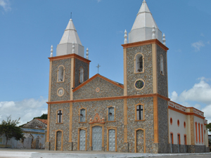
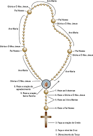
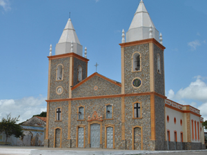

Próximo Encontro
Toda Segunda-feira às 19h horas na Igreja Matriz de São José Granja-Ce
Destaque - Aprenda a rezar o terço
Evangelho do Dia

Toda Segunda-feira às 19h horas na Igreja Matriz de São José Granja-Ce

Mãe, Rainha e Vencedora Três Vezes Admirável!
Mãe do Salvador e nossa Mãe!
Com o Terço na mão, peregrinamos com alegria ao teu Santua´rio.
Tudo o que somos e temos, te oferecemos como dons para o Capital de Graças.
Inspira nossos gestos, atitudes e palavras, e o jeito certo de servir e amar.Mãe do Rosário, cuida de todas as nossas necessidades.
A nós, homens do terço, ajuda-nos a conduzir nossas famílias no armor a Cristo e à Igreja. Acolhe-nos, transforma-nos e envianos como teus missionários. Amém.